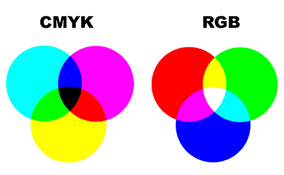

RGB - Red Green Blue
"RGB" é a abreviatura do sistema de cores aditivas formado pelos tons de Vermelho (Red), Verde (Green) e Azul (Blue). O propósito principal do sistema RGB é a reprodução de cores em dispositivos eletrônicos como monitores de TV, computadores, mídias digitais, celulares em geral.
Como o RGB funciona?
O pixel é a menor unidade de uma imagem digital. A cor de cada pixel é fruto da combinação das cores básicas: vermelha, verde e azul citadas acima onde cada uma dessas três cores possui 256 tonalidades, da mais clara à mais escura, que, combinadas, geram mais de 16 milhões de possibilidades de cores.
Quando utilizar o RGB?
Antes de mais nada você precisa ficar bastante atento a finalidade do material que está produzindo. O RBG não deve ser utilizado para materiais impressos devido a grande variação de cor entre o que é percebido no monitor e o que é impresso. Dessa maneira , se o objetivo do seu trabalho será produzir uma peça física (como um folder, rótulo, placa de sinalização, painel, etc.) qualquer que seja a superfície de impressão, é importante sempre manter o modo de seu documento como CMYK.
CMYK - Cyan Magenta Yellow blaKc
O CMYK é uma abreviação do sistema formado pelas cores Ciano, Magenta, Amarelo (Yellow) e Preto (Black), ela é uma cor subtrativa, ou seja, ao falarmos de cores, temos que diferenciar duas linhas de pensamento distintas: a Cor-Luz e a Cor-Pigmento.
Como o CMYK funciona?
O sistema de cores CMYK é uma cor pigmento. As cores pigmento, como o nome sugere, são formadas de pigmentos sólidos que quando sobrepostos tendem a ficar cada vez mais escuros. Isso acontece porque a cor que vemos é apenas um reflexo da luz que incide sobre o pigmento, e uma vez sobrepostos esses pigmentos refletem menos luz, até haver uma ausência total dela, que é o preto. Essas quatro cores, são as mais importantes no mundo da impressão gráfica.
Quando utilizar o CMYK?
Assim, o CMYK trata-se na verdade de um sistema de cores utilizado para impressão no mundo todo. Ele é usado em indústrias de impressão de revistas, jornais, livros, camisas, convites, faixas, entre outros materiais impressos. Podemos afirmar aqui, que as cores CMYK são a melhor alternativa quando o projeto for direcionado para impressão.
Qual a diferença final?
Na comparação abaixo, o lado esquerdo corresponde ao modo CMYK. Sendo assim, Ciano (lado esquerdo) é a cor inversa do Vermelho (lado esquerdo), o Magenta é a cor inversa do Verde e o Amarelo é a inversa do Azul.
Aqui temos uma imagem para a comparação entre as duas tipagens de cores